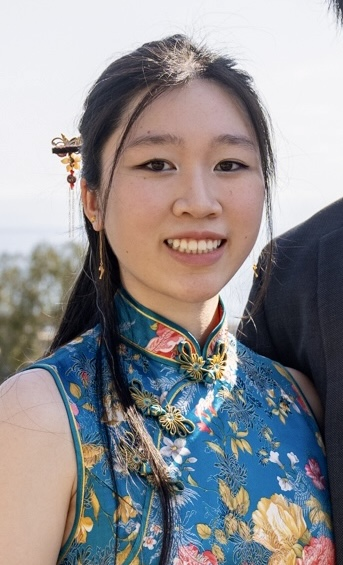

About Me

Hi! I'm Kailyn, a student at Wellesley College ('28) from Southern California. I love merging creativity with technology — whether that’s through art, music, or software development.
I'm looking to expand my knowledge and push boundaries! With a background in martial arts, music, and problem solving, I approach things from a unique place in life.
Passions
My Coding Journey
Middle School
- Dabbled in coding using Python basics.
- Sparked an early curiosity in logic, syntax, and creative problem-solving.
Freshman Year (2020-2021)
Kode with Klossy Mobile App Camp - Swift, SwiftUI, XCode
- Built Crochet Central, a prototype iOS app for crochet lovers.
- Learned conditionals, functions, arrays, loops, classes, storyboards, and segues.
- Gained experience using XCode and user-focused design tools.
Intro to Computer Science (in school) - Python
- Explored foundational concepts like algorithms and debugging.
- Experience was more rigid and theoretical compared to KWK, but taught me persistence.
Sophomore Year (2021-2022)
Kode with Klossy Web Dev Camp - HTML, CSS, JavaScript
- Created ReadIt, a book lovers' site featuring forums, rec quizzes, and Google Maps API.
- Designed for accessibility, UI/UX, and user empowerment, helping to support small bookstores.
AP Computer Science: A (in school) - Java
- Learned Java and other OOP concepts, but faced a frustrating classroom culture, which shaped my passions for gender equity in tech and ethical software development spaces.
Junior Year (2022-2023)
Kode with Klossy Data Science Camp - SQL, Python, Google Sheets, Colab
- Analayzed substance abuse data across countries.
- Visualized international trends and explored data storytlling.
- Applied ethical tech principles and tackled a real-world issue I care about.
Advanced Java Course (Johns Hopkins CTY)
- Deepened understanding of Java beyond school curriculum.
- Built multiple small-scale projects focusing on performance and logic.
Senior Year (2023-2024)
- Led my second year as president of the American Computer Science League (ACSL) club, mentoring classmates in topics like boolean algebra, number systems, and LISP.
- Grew into a more confident teacher and peer mentor.
- Took a step back from formal coding programs to reflect on my journey and next steps as a college undergraduate.
College: Wellesley (2023-Present)
Text Adventure Game (CS230X) - Java, yED
- Build a data-structure-driven game with graphs, stacks, queues, and trees.
- Used OOP, gameplay mechanics, and custom maps.
"Peckish" App (CS248) - Python, SQL, Pandas
- Co-created a joyful, privacy-focused food journalling app using Streamlit.
- Pulled live dining hall data via WellesleyFresh API; added tagging and community features.
- Emphasized value-sensitive design, user trust, and community-centered UX.
Kode with Klossy Data Storytelling Challenge
- Where we are now!
Contact Me
Want to collaborate, connect, or just say hi?
Mail: kailynmlau@gmail.com LinkedIn: Kailyn Lau